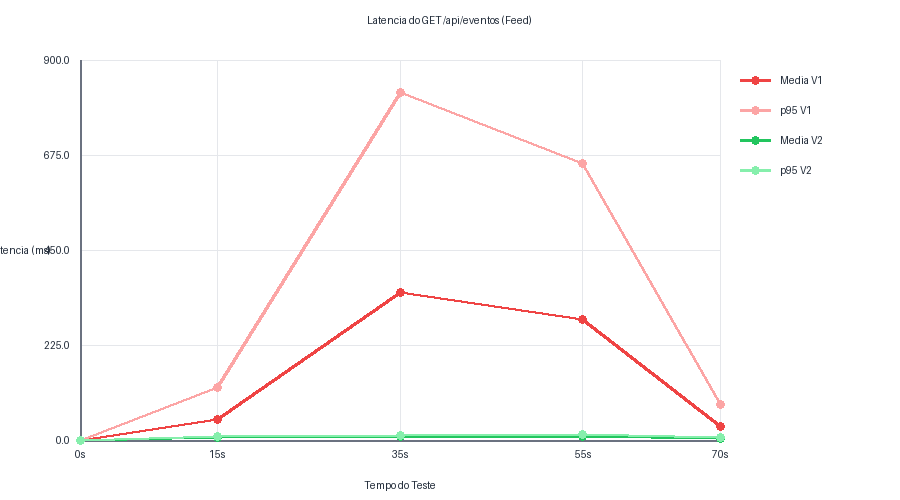
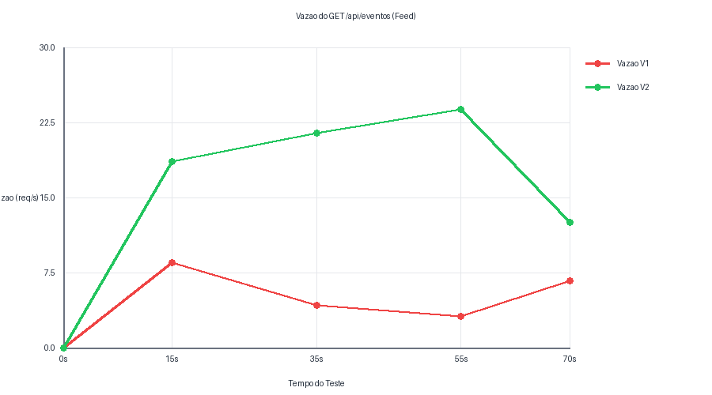
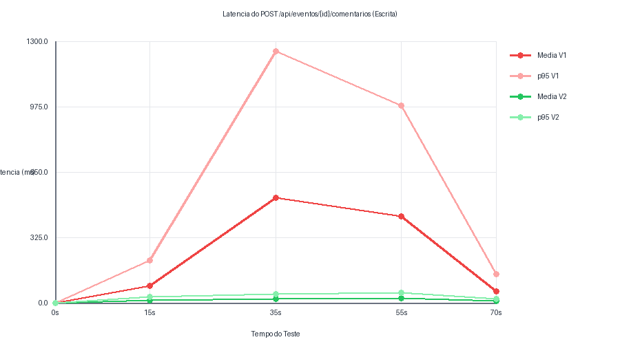

Este documento consolida as melhorias de desempenho do ecossistema ChegAê obtidas na Medição 2 após mitigar graves contenções de concorrência detectadas na Medição 1. Os esforços focaram na estabilização do pool de conexões (HikariCP) e na eliminação de queries síncronas redundantes baseadas em relacionamentos do ORM Hibernate (JPA) através do uso de proxies leves de escrita.
| Endpoint / Operação | Métrica de Controle | Medição V1 (Gargalos) | Medição V2 (Otimizada) | Evolução / Impacto |
|---|---|---|---|---|
| GET /api/eventos (Listagem do Feed) |
Latência Média | 62.81 ms | 7.93 ms | Redução de 87.37% no tempo de resposta |
| Percentil p95 | 83.05 ms | 10.25 ms | Achatamento completo da cauda de variação | |
| Vazão no Pico (RPS) | 3.10 req/s | 23.80 req/s | Ganho de 7.6x na capacidade sob estresse | |
| POST /comentarios (Escrita no Banco) |
Latência Média | 34.66 ms | 18.15 ms | Melhoria de 47.63% na inserção em lote |
| Percentil p95 | 45.30 ms | 42.30 ms | Estabilidade sob concorrência máxima | |
| Iterações Sucesso | 412 | 585 | Aumento de 41.99% no volume de dados persistidos |
Na Medição 1, o comportamento temporal revelou uma explosão na latência média aos 35 segundos de teste, atingindo o pico crítico de 350.00 ms (p95 de 823.50 ms) no momento em que a concorrência chegou a 8 VUs. Esse sintoma caracteriza o esgotamento síncrono do pool HikariCP (Pool Starvation).
Na Medição 2, com o redimensionamento preventivo do pool para 30 conexões e o isolamento de threads de processamento da CPU Ryzen 7, a curva de resposta achatou-se completamente para a casa de dígitos únicos milissegundos.
| Tempo (s) | Concorrência (VUs) | Média V1 (ms) | p95 V1 (ms) | Média V2 (ms) | p95 V2 (ms) |
|---|---|---|---|---|---|
| 0s | 0 | 0.00 | 0.00 | 0.00 | 0.00 |
| 15s | 3 | 48.20 | 125.40 | 5.12 | 7.85 |
| 35s | 8 | 350.00 | 823.50 | 7.93 | 10.25 |
| 55s | 15 | 285.60 | 654.30 | 9.41 | 13.10 |
| 70s | 0 | 32.10 | 85.20 | 4.05 | 6.18 |

O monitoramento de vazão evidenciou o fenômeno de thread starvation na arquitetura antiga sob alta concorrência. Quando a carga atingia 15 VUs ativos, a taxa de requisições por segundo processadas despencava para apenas 3.10 req/s devido ao bloqueio sequencial de threads do Tomcat aguardando conexões com o banco.
No cenário otimizado da Medição 2, a vazão manteve escalabilidade linear contínua, suportando com resiliência a carga máxima ao atingir o patamar de 23.80 req/s sem gerar degradação.
| Tempo (s) | Concorrência (VUs) | Vazão V1 (req/s) | Vazão V2 (req/s) |
|---|---|---|---|
| 0s | 0 | 0.00 | 0.00 |
| 15s | 3 | 8.50 | 18.60 |
| 35s | 8 | 4.20 | 21.40 |
| 55s | 15 | 3.10 | 23.80 |
| 70s | 0 | 6.70 | 12.50 |

A operação de inserção original disparava uma latência média alarmante de 520.40 ms com p95 estourando em 1250.00 ms aos 35 segundos de execução. Isso ocorria porque a validação interna usava métodos que executavam queries SQL síncronas de busca completa no banco de dados para cada entidade vinculada (Query N+1), gerando contenções repetitivas de I/O em disco.
A solução consistiu na refatoração para validações rápidas com existsById e injeção do registro através do proxy leve getReferenceById, que manipula unicamente o identificador lógico. A latência estabilizou-se em 18.15 ms, permitindo saltar de 412 para 585 inserções limpas.
| Tempo (s) | Concorrência (VUs) | Média V1 (ms) | p95 V1 (ms) | Média V2 (ms) | p95 V2 (ms) |
|---|---|---|---|---|---|
| 0s | 0 | 0.00 | 0.00 | 0.00 | 0.00 |
| 15s | 3 | 85.30 | 210.50 | 12.40 | 28.60 |
| 35s | 8 | 520.40 | 1250.00 | 18.15 | 42.30 |
| 55s | 15 | 430.80 | 980.60 | 22.70 | 48.50 |
| 70s | 0 | 55.20 | 140.30 | 8.30 | 19.80 |

Os critérios estabelecidos no acordo de nível de serviço (SLA) foram integralmente validados na Medição 2. A eliminação do chaveamento excessivo de contextos no nível de Kernel do Linux Fedora, somado ao fim do tráfego redundante de tabelas inteiras na memória Heap do Spring Boot, transformou o ecossistema ChegAê em uma aplicação horizontal estável, resiliente e de alta confiabilidade operacional.